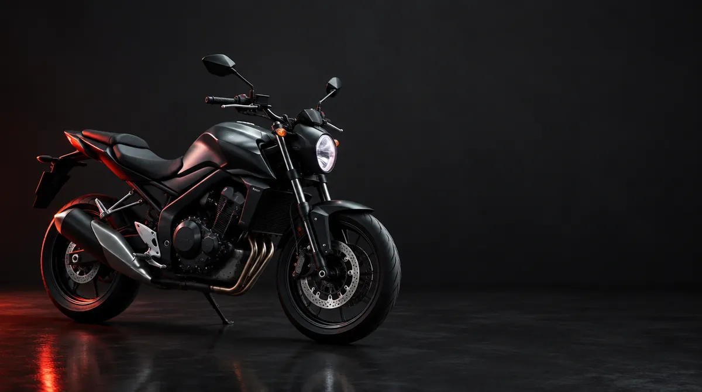

Inicio / Inspecciones / Motocicletas
Inspección estatal de motocicletas en Phoenixville, PA (ahora todo el año)
Las motocicletas de Pensilvania ahora se pueden inspeccionar en cualquier mes del año. Llame al 610-650-0316 para coordinar la inspección de su motocicleta en Diverse Autoworks.
La respuesta corta
Inspecciones de motocicletas todo el año
Según la Ley 149 de 2024 de Pensilvania, vigente desde el 17 de enero de 2025, las inspecciones de seguridad de motocicletas ya no se limitan de marzo a octubre. PennDOT indica que una motocicleta que aprueba recibe una calcomanía válida por un año a partir del vencimiento de la calcomanía que se reemplaza, y que la calcomanía no puede emitirse por más de 15 meses a partir del mes de la inspección.
Preguntas sobre la inspección de motocicletas
¿Puedo inspeccionar mi motocicleta en invierno?
Sí. Desde que la Ley 149 de 2024 entró en vigor el 17 de enero de 2025, las inspecciones de motocicletas en Pensilvania pueden hacerse todo el año y no solo de marzo a octubre. Llame al 610-650-0316 para coordinar su visita.
¿Cuándo vence mi nueva calcomanía de inspección?
PennDOT indica que la nueva calcomanía es válida por un año a partir del vencimiento de la calcomanía que se reemplaza, y que la calcomanía de una motocicleta no puede emitirse por más de 15 meses a partir del mes de la inspección. Si tiene dudas, llámenos con el mes de su calcomanía actual.
¿También inspeccionan autos, camiones y remolques?
Sí. Ofrecemos servicios de inspección estatal y de emisiones para autos, camiones, remolques y motocicletas. Llame para confirmar qué inspección necesita su vehículo.
Qué cubre una inspección de motocicletas en PA
Toque una parte para ver los elementos que enumera PennDOT. Llame al taller para coordinar su visita.

Toque un punto numerado para ver los elementos que enumera PennDOT.
Una inspección evalúa los componentes de seguridad requeridos; no es lo mismo que una cita completa de servicio del motor.
Visite Diverse Autoworks
1415 Pawlings Road, Phoenixville, PA 19460. Llame al 610-650-0316 para coordinar su inspección y confirmar la disponibilidad.
Llamar al 610-650-0316 Autos, camiones y remolques: inspecciones estatales